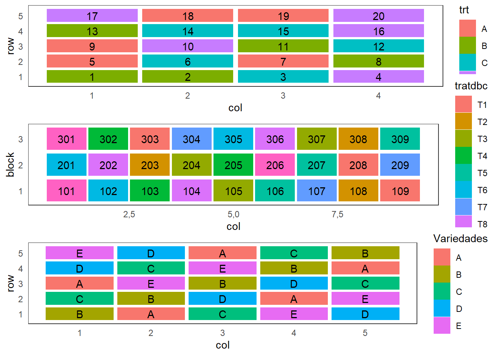
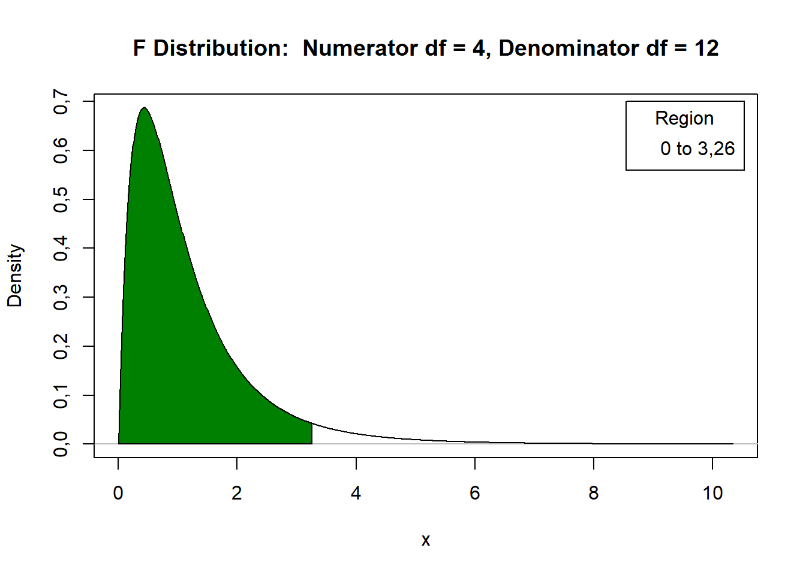

Características importantes
O número de linhas (\(I\)) é igual ao número de colunas (\(J\)) e igual ao número de tratamento (\(K\)). \(I \;=\; J \;=\; K\)
O número de parcelas no experimento é dado por \(I^2\).
Cada tratamento ocorre uma única vez em cada linha e uma única vez em cada coluna.
O tamanho do experimento cresce rapidamente à medida que aumenta o número de tratamentos.
Os mais comumente encontrados são 5 \(\times\) 5, 6 \(\times\) 6, 7 \(\times\) 7 e 8 \(\times\) 8.
Em ensaios de campo, um terreno (área experimental) pode apresentar declive em dois sentidos, perpendiculares.
Ensaios com animais pode-se ter interesse em testar o efeito de rações distintas, porém o número de animais semelhantes pode ser limitado e ainda ter animais de raças e tamanhos distintos.
(The Forestry Commission)
#> [1] "T1" "T2" "T3" "T4" "T5" "T6" "T7" "T8" "T9"
#> [1] "A" "B" "C" "D" "E"
#> $parameters
#> $parameters$design
#> [1] "lsd"
#>
#> $parameters$trt
#> [1] "A" "B" "C" "D" "E"
#>
#> $parameters$r
#> [1] 5
#>
#> $parameters$serie
#> [1] 2
#>
#> $parameters$seed
#> [1] -1075533545
#>
#> $parameters$kinds
#> [1] "Super-Duper"
#>
#> $parameters[[7]]
#> [1] TRUE
#>
#>
#> $sketch
#> [,1] [,2] [,3] [,4] [,5]
#> [1,] "B" "A" "C" "E" "D"
#> [2,] "C" "B" "D" "A" "E"
#> [3,] "A" "E" "B" "D" "C"
#> [4,] "D" "C" "E" "B" "A"
#> [5,] "E" "D" "A" "C" "B"
#>
#> $book
#> plots row col Variedades
#> 1 101 1 1 B
#> 2 102 1 2 A
#> 3 103 1 3 C
#> 4 104 1 4 E
#> 5 105 1 5 D
#> 6 201 2 1 C
#> 7 202 2 2 B
#> 8 203 2 3 D
#> 9 204 2 4 A
#> 10 205 2 5 E
#> 11 301 3 1 A
#> 12 302 3 2 E
#> 13 303 3 3 B
#> 14 304 3 4 D
#> 15 305 3 5 C
#> 16 401 4 1 D
#> 17 402 4 2 C
#> 18 403 4 3 E
#> 19 404 4 4 B
#> 20 405 4 5 A
#> 21 501 5 1 E
#> 22 502 5 2 D
#> 23 503 5 3 A
#> 24 504 5 4 C
#> 25 505 5 5 B
\[y_{ij(k)} = \mu + l_i + c_j + \tau_{k(ij)} + e_{ij(k)}, \quad i=1, \ldots, I; j=1, \ldots, I, k=1, \ldots, I,\]
em que:
DQL: Restrições usuais e estimadores de mínimos quadrados
Restrições
\(\sum_{k=1}^{I} \hat{\tau}_k = 0\)
\(\sum_{i=1}^{I} \hat{l}_i = 0\)
\(\sum_{j=1}^{I} \hat{c}_j = 0\)
Soluções de mínimos quadrados
\(\hat{\mu} = \bar{y}\)
\(\hat{\tau}_k = \bar{y}_k - \bar{y}\)
\(\hat{l}_i = \bar{y}_i - \bar{y}\)
\(\hat{c}_j = \bar{y}_j - \bar{y}\)
Hipóteses de interesse
\(H_0:\) \(\mu_{Trat_1} = \mu_{Trat_2} = \ldots = \mu_{Trat_I}\)
\(H_1:\) \(\text{pelo menos duas médias diferem entre si}\)
Tabela 1. ANOVA
| F.V. | gl | SQ | QM | F |
|---|---|---|---|---|
| Linhas | \(I-1\) | SQL | SQL/glL | QML/QMRes |
| Colunas | \(I-1\) | SQC | SQC/glC | QMC/QMRes |
| Tratamentos | \(I-1\) | SQTra | SQTrat/glTrat | QMTrat/QMRes |
| Resíduo | \((I-1)(I-2)\) | SQRes | QMRes | |
| Total | \(I^2-1\) | SQTotal |
Tabela 2. Produção de 5 variedades de cana-de-açúcar
| Linhas | 1 | 2 | 3 | 4 | 5 | Totais |
|---|---|---|---|---|---|---|
| 1 | 432 (D) | 518 (A) | 458 (B) | 583 (C) | 331 (E) | 2322 |
| 2 | 724 (C) | 478 (E) | 524 (A) | 550 (B) | 400 (D) | 2676 |
| 3 | 489 (E) | 384 (B) | 556 (C) | 297 (D) | 420 (A) | 2146 |
| 4 | 494 (B) | 500 (D) | 313 (E) | 486 (A) | 501 (C) | 2294 |
| 5 | 515 (A) | 660 (C) | 438 (D) | 394 (E) | 318 (B) | 2325 |
| Totais | 2654 | 2540 | 2289 | 2310 | 1970 | 11763 |
\(T_A = 2463 \quad T_B = 2204 \quad T_C = 3024 \quad T_D = 2067 \quad T_E = 2005\)
Soma de quadrados total :
\[SQ_{Total} = \sum_{ij} y_{ij(k)}^2 - \frac{\left(\sum_{ij} y_{ij(k)}\right)^2}{I^2}\\ = 432^2 + 518^2 + \ldots + 318^2 - \frac{11763^2}{25}\\ = 257724,20\]
Soma de quadrados linhas:
\[SQ_{Linhas} = \frac{1}{I}\sum_{i} y_{i.(k)}^2 - \frac{\left(\sum_{ij} y_{ij(k)}\right)^2}{I^2}\\ = \frac{1}{5}\left(2322^2 + 2676^2 + 2146^2 + 2294^2 + 2325^2\right) - \frac{11763^2}{25}\\ = 30480,64\]
Soma de quadrados de colunas
\[SQ_{Colunas} = \frac{1}{I}\sum_{j} y_{.j(k)}^2 - \frac{\left(\sum_{ij} y_{ij(k)}\right)^2}{I^2}\\ = \frac{1}{5}\left(2654^2 + 2540^2 + 2289^2 + 2310^2 + 1970^2\right) - \frac{11763^2}{25}\\ = 55640,64\]
Soma de quadrados de tratamentos
\[SQ_{Tratamentos} = \frac{1}{I}\sum_{k} y_{..k}^2 - \frac{\left(\sum_{ij} y_{ij(k)}\right)^2}{I^2}\\ = \frac{1}{5}\left(2463^2 + 2204^2 + 3024^2 + 2067^2 + 2005^2\right) - \frac{11763^2}{25}\\ = 137488,20\]
Soma de quadrados de resíduos
\[SQ_{\text{Residuo}} = SQ_{\text{Total}} - SQ_{\text{Linhas}} - SQ_{Colunas} - SQ_{Trat} \\ = 257724,20 - 30480,64 - 55640,64 - 137488,20\\ = 34114,72\]
Quadrado médio da linha
\[QM_{Linhas} = \frac{SQ_{Linhas}}{gl_{Linhas}} \\ = \frac{30480,64}{4} \\ = 7620,16\]
Quadrado médio da coluna
\[QM_{Colunas} = \frac{SQ_{Colunas}}{gl_{Colunas}} \\ = \frac{55640,64}{4}\\ = 13910,16\\\]
Quadrado médio do tratamento
\[QM_{Tratamentos} = \frac{SQ_{Tratamentos}}{gl_{Tratamentos}} \\ = \frac{137488,20}{4} \\ = 34372,06\\\]
Quadrado médio do resíduo
\[QM_{Residuo} = \frac{SQ_{Residuo}}{gl_{Residuo}} \\ = \frac{34114,72}{12}\\ = 2842,89\\\]
Tabela 3. Quadro da Anova para o experimento de produção de cana-de-açúcar
| F.V. | gl | SQ | QM | Fcal | Ftab |
|---|---|---|---|---|---|
| Linhas | 4 | 30480,64 | 7620,16 | ||
| Colunas | 4 | 55640,64 | 13910,16 | ||
| Tratamentos | 4 | 137488,20 | 34372,06 | 12,09 | 3,26 |
| Resíduo | 12 | 34114,72 | 2842,89 | ||
| Total | 24 | 257724,20 |
Distribuição F

Hipóteses:
\[\Delta = q_{(\alpha, I, glRes)}\sqrt{\frac{\mbox{QM Resíduo}}{J}} = 4,51\sqrt{\frac{2842,89}{5}} = 107,54\]
Tabela 4. Classificação das médias pelo teste de Tukey
| Médias | classificação |
|---|---|
| \(\hat{\mu}_C = 604,8\) | a |
| \(\hat{\mu}_A = 492,6\) | b |
| \(\hat{\mu}_B = 440,8\) | b |
| \(\hat{\mu}_D = 413,4\) | b |
| \(\hat{\mu}_E = 401,0\) | b |
Os dados que se seguem referem-se à produção de mandioca, obtidos de um experimento envolvendo quatro sistemas de plantio de manivas de mandioca, instalado no delineamento em quadrado latino 4x4. Esse experimento foi conduzido pela Seção de Raízes e Tubérculos do Instituto Agronômico de Campinas. Os tratamentos envolvidos apresentavam as seguintes características:
| Linhas | Colunas | |||
|---|---|---|---|---|
| . | 1 | 2 | 3 | 4 |
| 1 | 122,6 (A) | 98,8 (D) | 122,6 (B) | 102,5 (C) |
| 2 | 126,3 (B) | 110,3 (A) | 110,1 (C) | 53,7 (D) |
| 3 | 83,1 (D) | 106,4 (C) | 100,6 (A) | 93,4 (B) |
| 4 | 96,7 (C) | 107,2 (B) | 75,7 (D) | 80,2 (A) |
Faça o croqui do planejamento de um experimento com as características do experimento em questão.
Com base nos resultados do experimento apresentados na Tabela 2 e considerando o nível de significância 5%:
| F.V. | gl | SQ | QM | Fcal | Ftab |
|---|---|---|---|---|---|
| Linhas | 436,555 | ||||
| Colunas | 148,945 | ||||
| Tratamentos | 913,575 | 4,75 | |||
| Resíduo | 412,995 | ||||
| Total | 1912,070 |
| F.V. | gl | SQ | QM | Fcal | Ftab |
|---|---|---|---|---|---|
| Linhas | 3 | 436,555 | |||
| Colunas | 3 | 148,945 | |||
| Tratamentos | 3 | 913,575 | 304,52 | 4,42 | 4,75 |
| Resíduo | 6 | 412,995 | 68,33 | ||
| Total | 15 | 1912,070 |
Ao nível de 5% de significância, há evidências para rejeitarmos \(H_0\). Logo, não podemos afirmar que todas as médias de ganho de peso para os diferentes tratamentos são iguais.
Faça o upload da resulução e tire suas aqui